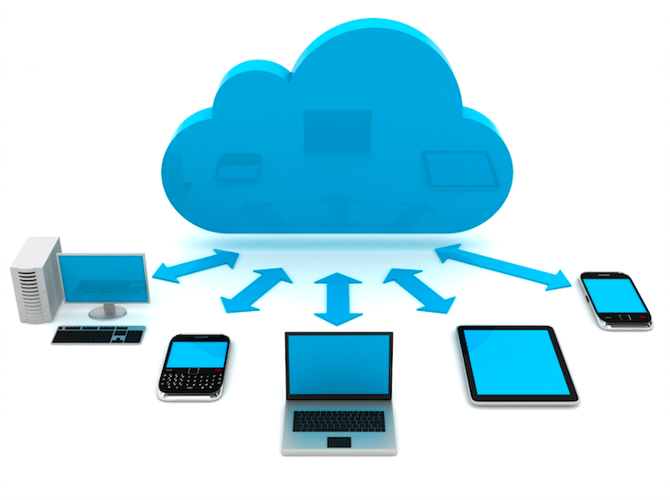

Conceptos generales

La computación en nube (cloud computing) puede verse como un nuevo estilo de computación en el cual los recursos, dinámicamente escalables y frecuentemente virtualizados, son provistos como servicios sobre Internet. La computación en nube se ha convertido en una tendencia tecnológica significativa y muchos expertos esperan que cambie los procesos y el mercado de las Tecnologías de la Información (IT).
Con la tecnología de la computación en nube, los usuarios utilizan una variedad de dispositivos, incluyendo computadoras personales (PCs), computadoras portátiles (Notebooks), teléfonos inteligentes (Smartphones) y asistentes personales digitales (PDAs), para acceder a programas, almacenamiento y plataformas para el desarrollo de aplicaciones sobre Internet, a través de servicios ofrecidos mediante los proveedores de la nube. Entre las ventajas de la tecnología de la computación en nube se encuentran el salvar costos, la alta disponibilidad y la facilidad de escalabilidad.
Su primera versión estable se lanzó el 22 de junio de 2013.